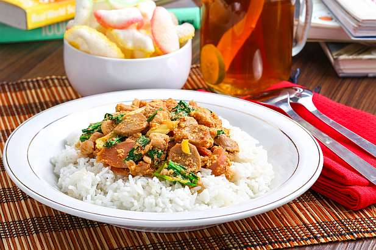

Nasi Goreng Gila

Langkah pembuatan:
- Panaskan minyak. Tumis bakso dan sosis serta telur. Masak hingga matang. Kemudian masukkan sayuran dan aduk rata
- Tuang bumbu, aduk hingga bumbu tercampur semua.
- Setelah diaduk rata, masukkan air dan masak hingga air mengering
- Siapkan nasi diatas piring, Tuang isian ke atas nasi hangat